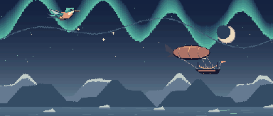
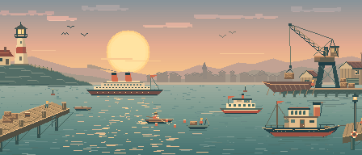
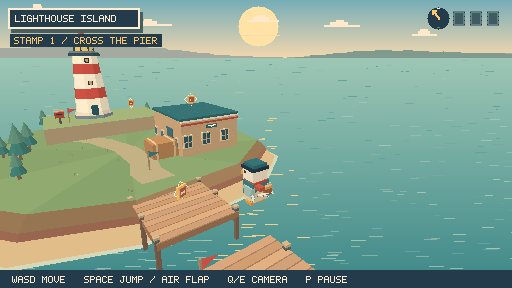

Airmail arcade
Night Post
Pilot a kingfisher with a satchel of letters. Drop the mail into moving nets and see who writes back from the last ferry.
Fly with the arrow keys, brake with X, and drop with Space. On a phone, use the flight controls below the sky.
Play Night Post →

Idle harbor tycoon
Bellweather Harbor
Start with a rowboat and a brass bell. Hire a captain, trade the catch, and keep an eye on the paperwork coming off the quay.
Ring the bell to send out your first boat. Click or tap the ledger to buy another, or use Tab and Enter.
Play Bellweather Harbor →

Native 3D platformer · v0.1.1
Gullpost Express 64
Find three postmarks on Lighthouse Island. Cross the pier, land on the boathouse roof and carry the keeper’s letter around the beacon.
Space jumps and flaps. Turn the camera with Q and E. Read the 3D test log.
Open native play guide →